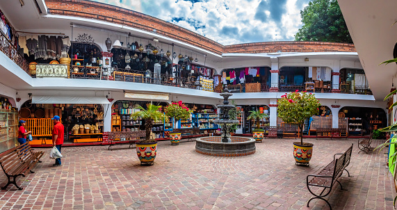
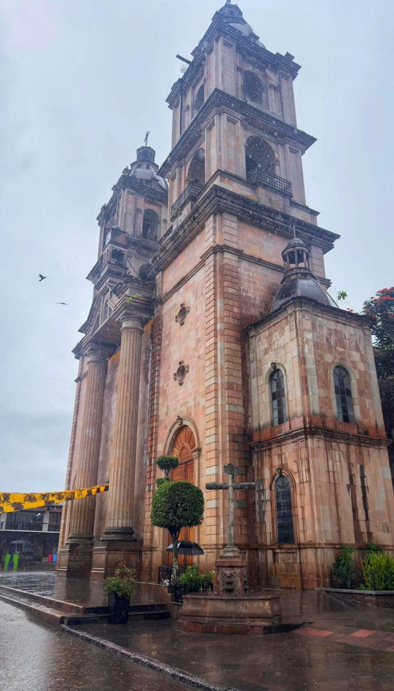
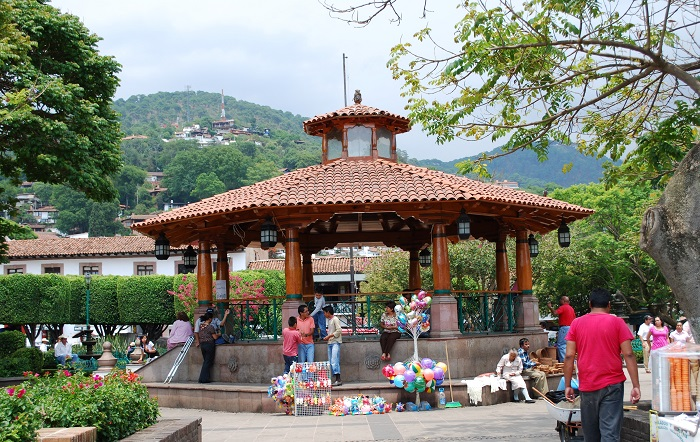

En el mercado de artesanías puedes encontrar una variedad inmensa de cosas hechas a mano como lo son: jarros, cuadros pra fotografías, canastos para tortillas, servilletas bordadas, etc.

La iglesia que se muestra en la imagen es la iglesia de San Francisco de Asís,la cual es una de las construcciones más bonitas que tiene valle de bravo, ya que tiene una historia y pinturas muy lindas dentro de ella.

El kiosko de Valle es un lugar muy tranquilo y bonito, además de popular, ya que por las tardes varias personas de diferentes edades se reúnen para cantar, bailar o simplemente para olvidarse del estrés y pasar un buen rato.
